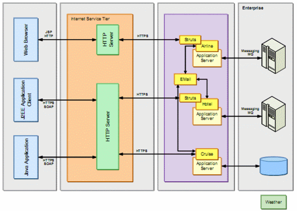
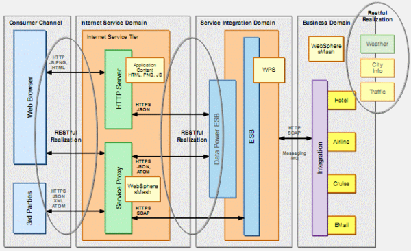

지금 막 따끈따끈하게 나온 IBM Redbooks, CaseStudy Web 2.0 SOA 시나리오는 가상의 여행사를 대상으로 Web 2.0기반의 보다 빠르고 유연한 웹 서비스 환경을 구축하는 방안을 설명하고 있다.
아래의 그림은 해당 여행사의 현재의 아키텍처를 보여준다.
책에서는 아래와 같은 아키텍처를 제안한다.
비용적인 측면에서는 Service Integration Domain만 저렴한 ESB제품으로 교체하면 기존의 아키텍처에 비해 훨씬 더 저렴하게 시스템을 구축할 수 있을 뿐더러 DataCenter나 클라우드에 이전하여 운영하는 것도 그다지 어려운 일이 아니다.
다만 본 사례는 여행사라고 하는, 그다지 Legacy의 영역보다는 채널 연계가 핵심인 비즈니스에 어울릴 수 있는 사례라는 점이다. 궁금한 점은 과연 여행사 비즈니스가 내부망 연계에 sMash와 같은 경량화된 미들웨어를 써도 될만큼 복잡하지 않은 특성을 가지고 있는지 여부이다. 오늘 여행사 서비스를 계획하고 있는 업체를 방문하게 된다. 현실과 이상의 차이를 발견해보길 기대한다.
아래의 그림은 해당 여행사의 현재의 아키텍처를 보여준다.

신규 서비스 추가나 비즈니스 Policy변경 혹은 다양한 채널에대한 유연한 대응을 하는데 어려움이 있는 구조이며 덩치큰 애플리케이션 덩어리로 나누어져 있어서 빠른 대응이 힘든 구조라고 책에서는 이야기하고 있다. 사실 이대로만 사용한다면 IT운영 입장에서는 그 한계를 못느낄 수도 있을 것 같다. 현재의 대부분의 사이트의 모습도 이 아키텍처와 크게 다르지 않을 것이다.책에서는 아래와 같은 아키텍처를 제안한다.

책에서는 비즈니스 로직과 Policy가 완벽히 분리되어 있어서 빠르고 간단하게 변화에 대응이 가능한 구조라고 이야기하고 있다. 더욱이 3rd 제품 추가가 용이하며 신규 서비스나 채널에 대응도 매우 유용하다 이야기하고 있다. 그림에서 언급된 sMash는 기존 WAS가 아닌 보다 빠르게 웹 2.0 자원들을 활용할 수 있는 경량화된 미들웨어이다. 또한 본 아키텍처에서는 ESB가 매우 강력하게 제안되어 있다. Service Integration Domain 영역이 그것인데, DataPower라는 ESB Appliance와 WPS라고 하는 BPM enabled한 ESB가 동시에 제안되어 있다. 실제로 사용자 혹은 채널과 연계를 담당하게 되는 인터넷 서비스 도메인(Internet Service Domain) 영역은 웹서버 혹은 다시 sMash와 같은 웹 2.0기반 미들웨어가 차지하고 있다. 비용적인 측면에서는 Service Integration Domain만 저렴한 ESB제품으로 교체하면 기존의 아키텍처에 비해 훨씬 더 저렴하게 시스템을 구축할 수 있을 뿐더러 DataCenter나 클라우드에 이전하여 운영하는 것도 그다지 어려운 일이 아니다.
다만 본 사례는 여행사라고 하는, 그다지 Legacy의 영역보다는 채널 연계가 핵심인 비즈니스에 어울릴 수 있는 사례라는 점이다. 궁금한 점은 과연 여행사 비즈니스가 내부망 연계에 sMash와 같은 경량화된 미들웨어를 써도 될만큼 복잡하지 않은 특성을 가지고 있는지 여부이다. 오늘 여행사 서비스를 계획하고 있는 업체를 방문하게 된다. 현실과 이상의 차이를 발견해보길 기대한다.
공유하기 버튼
|
|


{kind=link}
최근 덧글